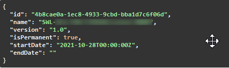
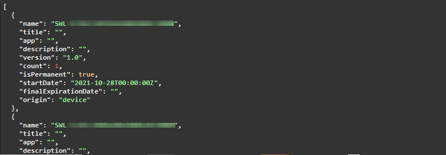
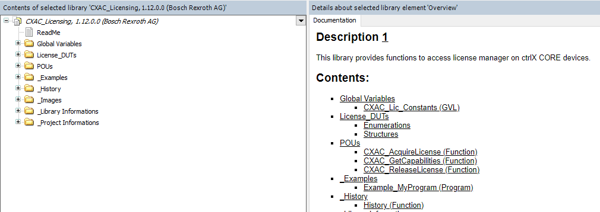

This document is part of the Bosch Rexroth ctrlX CORE App Development Guideline, and describes how to adapt to the the license management of the device.
Please refer to the App Development Guide for further information.
Table of Contents¶
2.3 ctrlX CORE Temporary Usage Rights (Emergency Mode)
2.4 ctrlX CORE 10 Day Trial License
2.5 Four Hour Engineering Demo License on ctrlX COREvirtual
2.6 Additional License Mode: ctrX CORE 3 Month Test License
2.7 Spoofing detection by optionally signing / verifying license requests
3.1 Add Content Plug to snapcraft.yaml
3.2 Adapt package-manifest.json
3.3 Use API to Enforce Licenses
3.4 Communicate with License Manager API
3.5 Access License Manager in PLC Application
3.6 License Management in Windows Applications
1 Introduction ¶
Bosch Rexroth provides a Licensing Center portal at https://licensing.boschrexroth.com for managing device licenses. Through this portal, users can assign licenses to their devices and download a capability response. This response includes all licenses assigned to a specific device. After downloading, users can deploy this capability response to the corresponding device. This platform facilitates the easy management of device licenses, ensuring that devices have the required capabilities.
The ctrlX CORE User Interfaces therefore provides a license page which allows to upload a capability response and to check the currently available licenses on the device. For developers, the ctrlX CORE offers a restful API via an internal unix domain socket which can be used by an app to request and release a specific license.
2 Licensing Modes ¶
2.1 Overview ¶
The license management on the ctrlX CORE supports several different licensing modes. The following table gives an overview about the license modes.
| License Mode | Target | Key | Usage | Additional information |
|---|---|---|---|---|
| Main License | ctrlX CORE | SWL_XCR_{YOUR_APP_LICENSE_CODE} |
mandatory | check note |
| Temporary Usage Rights (Emergency Mode) | ctrlX CORE | SWL_XCR_{YOUR_APP_LICENSE_CODE} |
mandatory | tampered flag is true |
| 10 Day Trial License | ctrlX CORE | SWL_XCR_{YOUR_APP_LICENSE_CODE} |
optional | isPermanent flag is false |
| Four Hour Engineering Demo License | ctrlX COREvirtual | SWL_XCR_ENGINEERING_4H |
suggested | check note |
Important
- The app will start normally in the first three cases irrespective of the modes. Information about temporary/trial is not important and developer can avoid checking the different flags.
- To ensure a seamless trial experience, we recommend enabling your application to launch with both the standard license and the
SWL_XCR_ENGINEERING_4Hlicense. More information is provided below. - For storing the license ID, it's recommended to use
/tmp. This folder is accessible from the snap by default. Users can easily write the ID to/tmp/myFancyFile, which remains available until the system reboots, even after the app is removed.
ctrlX COREvirtual¶
As displayed in the table, there is only the "four hour engineering demo license" available on the ctrlX COREvirtual, which allows to evaluate a new app for a limited time (the ctrlX COREvirtual is terminated after four hours to prevent productive use). Use the SWL_XCR_ENGINEERING_4H license when the application is running in ctrlX COREvirtual.
All other cases¶
The different license modes and their expected behaviors for the app are described briefly below. This information is intended to help developers distinguish between different cases depending on the license mode used within their application. The descriptions aim to show developers the type of license the app is currently operating under.
2.2 ctrlX CORE Main License ¶
Purpose: Standard License
Description:
- This is the standard license that a user obtains when buying an app. Therefore, the support of this license mode is mandatory.
- The license is obtained (bought) in the Bosch Rexroth Licensing Center and then assigned to a specific device by the user.
- The standard license can be either permanent (unlimited) or time based (expires)
Expected App Behaviour:
- The app shall start and run as intended, when the standard license is available.
- App should periodically check for validity of license(s)
- If acquiring a license is not possible (no license is available), the app shall inform the user that a license needs to be obtained.
- In case of time based licenses, the app should inform the user on time before the license expires. As a best practice, a user should be informed four weeks prior to expiration.
- When no standard app specific license is available on the device, an app shall only run if one of the other licenses is active.
2.3 ctrlX CORE Temporary Usage Rights (Emergency Mode) ¶
Purpose: Avoid machine downtime
Description:
- On a ctrlX CORE, the user has the possibility to activate a special mode that is called "Temporary usage rights". The mode can be activated using the License Manager UI.
- Enabling this mode allows users to operate the ctrlX CORE in a productive environment for ten consecutive days. The single purpose of this mode is to prevent a downtime when a defect device is replaced and no licenses have been assigned, yet. This mode can only be activated once on a device
- Within these ten days, the user has to either add licenses to the new device or move the licenses from the broken device to the replacement device.
Warning
After ten days, the mode will expire and cannot be reactivated.
Expected App Behaviour:
- Support of this license is mandatory.
- The app is able to detect whether the system runs in this mode by evaluating the
tamperedflag in the response to the acquisition request (the flag is set totrue) - When this mode is active, the app should work as if a standard license is available.
2.4 ctrlX CORE 10 Day Trial License ¶
Purpose: Test Mode on ctrlX CORE Hardware
Description:
- The 10 day trial license allows to use all apps - which support this license mode - for a restricted time for testing purposes.
- The license is intended for test and evaluation only and not for use in a production environment
- The license will automatically expire after 10 days.
- Other than the temporary usage rights mode, 10 day trial licenses may be used (consecutively) in case an according contractual agreement is available for all involved parties (Bosch Rexroth, Customer, ctrlX World Partner).
Expected App Behaviour:
- Support of this mode is optional.
- The app is able to detect whether the system runs in this mode by evaluating the
isPermanentflag in the response to the acquisition request (the flag is set tofalse) - When this mode is active, the app should work as if a standard license is available.
- This 10 day trail license is bought for all apps and mapped to device
2.5 Four Hour Engineering Demo License on ctrlX COREvirtual ¶
Purpose: Evaluation mode on a ctrlX COREvirtual Description:
- An according special license key (
SWL_XCR_ENGINEERING_4H) indicates that currently the limited evaluation mode is active - After 4 hours the ctrlX COREvirtual shuts down itself to prevent a productive use.
Expected App Behaviour:
- In order to support this non-productive mode, apps must check for the license
SWL_XCR_ENGINEERING_4H, which guarantees that the runtime is limited to 4 hours. - Support for this mode is optional yet highly recommended, offering users a great opportunity to fully experience the application's capabilities and functionalities.
2.6 Additional License Mode: ctrlX CORE 3 Month Test License ¶
Purpose: Time limited test and evaluation of apps which are in beta/prototype phase (B-Sample phase)
Description:
- This mode is not intended / available for partner apps by default.
- Please get in touch with Bosch Rexroth directly, if this mode might be of interest for you.
2.7 Spoofing detection by optionally signing / verifying license requests ¶
Purpose: This mechanism allows applications that request a licene to verify that the license indeed comes from the ctrlX OS license manager.
Description:
- Although it is quite unprobable, that a malicious actor could replace ctrlX OS' license manager, a further layer of security is added
- Applications can request licenses (see License Manager API) and set the 'signResponse' query parameter
- Once a license has been requested (with the corresponding query parameter set) the response's header will contain a signature
- This signature was calculated using the device certificate (and the corresponding tpm-based key) and can be used to fully verify that the license response was indeed from a certified ctrlX OS device with no spoofed license manager
Usage:
1) Any application that wants to use this mechanism will need to send a license request with the corresponding query parameter set
1.1) The response header contains a hex-encoded signature ("Payload-Signature")
2.2) The signature is created using ECDSA-SHA256 on the standardized curve 'SECP-256'
2) Once the response (and the signature in 'Payload-Signature') the application needs to verify that the signature is indeed valid and was produced by the device
2.1) The license manager's device certificate chain (and the public key herein) can be used for this - see (see License Manager API)
2.2) Use the public key inside the end-entity (device) certificate to verify the signature
3) Once signature verification is successful, we can assume that the chain sent by the device and the key used for signing correspond, however additional steps are required to ensure that the device is indeed a ctrlX OS device (and the license manager is unspoofed)
3.1) The device-certificate chain as retrieved in step 2.1 can now be used to check whether the device is a ctrlX OS device by verifying the certificate chain
3.2) The application now needs to verify that the certificate was indeed signed by an authorized ctrlX OS party (and its root CA certificate)
3.3) For this purpose it needs to know the corresponding ctrlX root CA certificate (com.ctrlx-automation.os.crt) - recommendation is to have it inside the app's binaries as this will ensure that no malicious entity would be able to change it.
3.4) Verify the certificate chain from the device up to the mentioned root certificate
Note: As there are multiple steps involved here (where some of them might be time consuming due to cryptographic complexity) it is the app's responsibility whether it wants to check this once during startup, according to a defined interval, etc. Please note the genereal perception is that - if this feature is required - checking it during startup suffices to verify the integrity of the license manager.
ctrlX OS root CA certificate:
As stated in in step 3.2, the application needs to know the ctrlX OS root CA certificate (com.ctrlx-automation.os.crt). If this feature is required, the corresponding certificate needs to be embedded inside the application. The ctrlX OS root CA certificate can be retrieved via the following link:
Download ctrlX OS root CA certificate (com.ctrlx-automation.os.crt)
3 License Enforcement ¶
To integrate an app into the license management, please follow the instructions below.
3.1 Add Content Plug to snapcraft.yaml ()¶
To get access to the unix domain socket that provides the restful API, add the following content plug definition to the snapcraft.yaml:
plugs:
licensing-service:
interface: content
content: licensing-service
target: $SNAP_DATA/licensing-service
This will create a folder "license-service" during installation of the app on the ctrlX CORE and provide access to the unix domain socket "licensing-service.sock" which will be located in the folder.
3.2 Adapt package-manifest.json ¶
The app shall provide information in the package-manifest about each license that is supported. Description and title shall be human readable. The "required" flag indicates whether a license is mandatory to use the application. Set the flag to true when the license is required and to false, when the license is optional. Multiple licenses can have the "required" flag set to true simultaneously. In this case, the app must ensure that it works if any of the 'required' licenses is available.
json
"licenses": [
{
"name": "SWL-XC*-RUN-DLACCESSNRT**-NNNN",
"title": "ctrlX OS License - Customer App",
"description": "Integration of customer apps into ctrlX OS with access to the ctrlX Data Layer",
"required": true
}
],
3.3 Use API to enforce licenses ¶
3.3.1 License Integration¶
How an app reacts when no license is present or the license is removed during runtime, can be freely chosen by the app. Nevertheless, to provide a unique user experience across multiple apps, the following best practices are recommended.
The app should acquire the license when started or each time a function requiring a license is called. Furthermore, it should periodically verify the presence of the license on the device by releasing and re-acquiring the license, ensuring it hasn't expired or been removed. This applies to both mandatory and optional types of licenses.
If a license is no longer required, such as when the app is stopped or uninstalled, the license should be released. This action returns the license to the license pool, allowing it to be acquired by another app. Otherwise, the license will only become available again after a reboot of the device.
If a license is missing, the application should display a warning or an error message and/or log the event. The user should be informed about which licenses are required to enable the specific functionality of the app.
Important
On the ctrlX CORE, when enforcing licenses the use of the license management is mandatory. Individual implementations are not permitted.
3.3.2 License Manager API¶
The licensing API is available on GitHub: https://boschrexroth.github.io/rest-api-description
The ctrlX License Manager API streamlines license management for the ctrlX OS. This API documentation is also available in the API Reference Section of ctrlX OS. It provides clear guidance on acquiring, releasing, querying, and managing licenses for different applications or functions. The REST API functionality allows users to test their license features and confirm their operability. The use of unix sockets for license integration is recommended. Refer to section 3.4 for details.
Implementing this API, an app is able to
- Get a list of all available license capabilities.
- Acquire a license.
- Release a license.
- Update the licenses in a ctrlX CORE by uploading a license file.
| Function | HTTP Method | URI | Payload | Parameters | Response |
|---|---|---|---|---|---|
| Get list of all activated capabilities | GET | /capabilities | none | none | 200, [ { "isPermanent": true, "finalExpirationDate": "2030-01-01T12:00:27.87+00:20", "name": "SWL-XCx-FRW-BASIC_FOOBAR-NNNN", "count": 1, "version": "1.0", "startDate": "2030-01-01T12:00:27.87+00:20" } ] |
| Aquire license | POST | /license | { "name": "SWL-XCx-FRW-BASIC_FOOBAR-NNNN", "version": "1.0" } |
signResponse | 200 { "isPermanent": true, "endDate": "2030-01-01T12:00:27. 7+00:20", "name": "SWL-XCx-FRW-BASIC_FOOBAR-NNNN", "id": 0083d875-30e8-4ff6-9f92-46096ef2d123", "version": "1.0", "startDate":"2030-01-01T12:00:27.87+00:20" } |
| Release license | DELETE | /license/{id} | none | none | 204 |
| Update the capability state in the device | PUT | /capabilities | file string($binary) |
withChangeReport | 200 |
| Get the device certificate chain | GET | /device-certificate-chain | none | none | 200, -----BEGIN CERTIFICATE----- MIIDOTCCA+gAwIBAgIURF1DTLBM3YljOsMxXMtHvtEVzE4wCgYIKoZIzj0EAwIwgbgxCzAJBgNVBAYTAkRFMRAwDgYDVQQIDAdCYXZhcmlhMRUwEwYDVQQHDAxMb2hy... FgYDVR0lAQHBAwwCgYIKwYBBQUHAwIwCgYIKoZIzj0EAwIDSAAwRQIgH9Ksvn024lHfDhL4w4YyBLAf6JzxjBix8L6Ka1m3NUgCIQCx3sd85Ag0m/XuF+GViRiL3obO2Kr7reeXVEAg1gRgqw== -----END CERTIFICATE----- -----BEGIN CERTIFICATE----- MIIDOjCCAt+gAwIBAgIUUdrEfPLcIibj5PCsmD1K6nYK0wCgYIKoZIzj0EAwIw...kRi49k6qak0EzsDVCWPxXeTLEa9OwinaCm1AiEAia+Kfhmg3cFI6KKHCA12ceic 0QRmvnOTubiVvXuTy88=QUHAwIwCgYIKoZIzj0EAwIDSAAwRQIgH9Ksvn024lHfDhL4w4YyBLAf6JzxjBix8L6IDSAAwRQIgH9Ksvn024lHfDhL4w4YyBLAf6JzxjBix8L6 -----END CERTIFICATE----- |
3.3.3 Acquiring & releasing a license¶
When starting an application or service that requires a license, it must acquire the necessary license to operate. Acquiring a license generates a unique ID specific to that license. The POST API call /license will acquire the license when passed with paramater as shown below.
json
{
"name": "SWL-XCx-FRW-BASIC_FOOBAR-NNNN",
"version": "1.0"
}
Upon a successful request, the following response will be returned.

The application should release the license when it is stopped or removed. It should also perform periodic checks to ensure the license's validity. The license can be released using the ID obtained from the acquire response. Storing this license ID is necessary and should be stored in a directory that is not affected when the application goes into a faulty state and needs to be restarted. The usage of /tmp is recommended for this purpose. This folder is accessible from the snap by default. Users can easily write the ID to /tmp/myFancyFile, which remains available until the system reboots, even after the app is removed.
3.3.4 Available licenses on the device (activated capabilities)¶
Upon request, an app may retrieve the list of available licenses on the device including all details (e.g. expiration, counter, etc.). This is recommended to check whether a specific license is available (and not in use) before trying to acquire it. Nevertheless, this is optional - it is sufficient to simply try to acquire a license and then check whether the acquisition request was successful.
Sample response:

3.3.5 Update license status¶
The API allows to upload a capability response (license file) from the license portal to update the license status on the device (e.g. add new licenses). This functionality is not required by an app itself but is rather performed by the device operator depending on which licenses will be required according to the installed apps. The REST API route to upload a license file allows passing an optional query parameter (withChangeReport). If this parameter is set, the result of the API will return all licenses that have been added / removed by the used license file.
3.4 Communication with License Manager API ¶
3.4.1 Unix socket¶
- The content interface from step 3.1 provides access through a unix-domain socket named licensing-service.sock. This socket is located at target path
$SNAP_DATA/licensing-service/licensing-service.sock. All licensing APIs can be accessed directly using an HTTP client through this socket address.
E.g. curl --unix-socket $SNAP_DATA/licensing-service/licensing-service.sock http://localhost/license-manager/api/v1/capabilities.
similarly HTTP client via unix socket can be used by other programming languages to access licensing API - Using unix sockets eliminates the need for authentication, making it a recommended option as no token for authorization is required.
Check if the Plug is connected:
if [ -d "$SNAP_DATA/licensing-service" ]; then echo "IS THE LICENSING PLUG INSERT: true"; else echo "IS THE LICENSING PLUG INSERT: false"; fi
Before executing the commands, change the current directory to $SNAP_DATA.
cd $SNAP_DATA
Examples using CURL:
Get capabilities:
curl -sS --no-buffer -XGET --unix-socket licensing-service/licensing-service.sock http://localhost/license-manager/api/v1/capabilities
Acquire the 4H license for ctrlX CORE Virtual. Use the license feature code from the capabilities to acquire a real license.
curl -sS --no-buffer -XPOST --unix-socket licensing-service/licensing-service.sock 'http://localhost/license-manager/api/v1/license' -H 'accept: application/json' -H 'Content-Type: application/json' -d "{\"name\":\"SWL_XCR_ENGINEERING_4H\",\"version\":\"1.0\"}"
Release a license:
curl -sS --no-buffer -XDELETE --unix-socket licensing-service/licensing-service.sock 'http://localhost/license-manager/api/v1/license/57ac4c58-4167-4afb-b4c2-e63c564c5b68'
Store license ID:
To store the license ID, it is recommended to use the /tmp folder. This folder is accessible from the snap by default. Users can easily write the ID to /tmp/myFancyFile, which remains available until the system reboots, even after the app is removed.
#Assuming that the license ID is contained in 'myid'
licensefilelocation = /tmp/LICENSED
echo $myid > $licensefilelocation
3.5 Access License Manager in PLC Application ¶
3.5.1 ctrlX AUTOMATION Library CXA_LICENSING¶
In addition to the REST API, the License Manager can also be used in a PLC application. To use the according functions, the library CXA_LICENSING can be added to a PLC application in the Library Manager.
Please refer to the ctrlX PLC Engineering documentation for information about the Library Manager.
3.5.2 Supported functions¶
The CXA_LICENSING library provides POUs to acquire and release licenses and to get capabilities. In addition, the library also comes with an example how to use the licensing mechanisms in a PLC application.
The online documentation of the library in ctrlX PLC Engineering provides detailed information about the POUs and the example:

3.6 License Management in Windows Applications ¶
ctrlX WORKS also supports the License Manager.
Please find the ctrlX WORKS Licensing API here in the ctrlX World Portal: ctrlX WORKS Licensing API
This API provides licensing functions for Windows Applications, and comes with according samples for different programming languages and frameworks.
Copyright¶
SPDX-FileCopyrightText: Bosch Rexroth AG